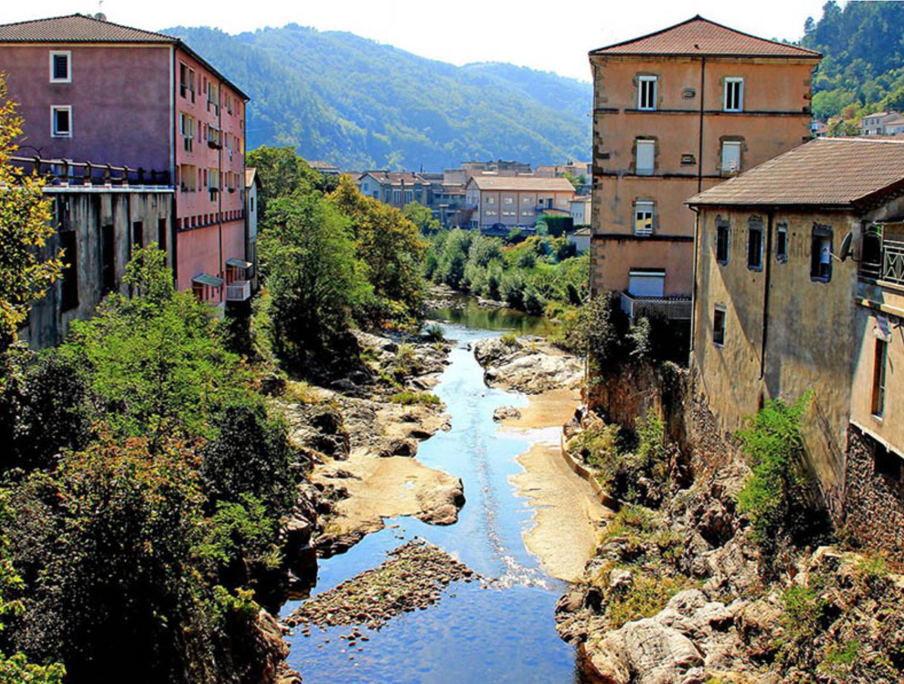

Vals-les-Bains, genesteld in het dal van de Volane, is een charmant kuuroord dat sinds de 17e eeuw bekendstaat om zijn mineraalwater. Door de belle-époquearchitectuur, het kuurpark met zeldzame bomen en de beroemde intermitterende bron is het een mooie tussenstop, op ongeveer 25 tot 30 minuten rijden van Les Cabritas in Flaviac, via Privas en Aubenas.

Een geschiedenis verbonden met de bronnen
De kuurtraditie van Vals-les-Bains gaat terug tot 1601-1602, toen een plaatselijke visser, Pierre Brun, van nierstenen zou zijn genezen na het drinken van water uit een van de bronnen. De faam van de bron 'Belle Fontaine' verspreidde zich en maakte van Vals een bekend kuuroord, met name voor de behandeling van diabetes en spijsverteringsproblemen. Vandaag zijn er in de gemeente niet minder dan 145 verschillende mineraalbronnen bekend, een opmerkelijke concentratie die de rijkdom van de vulkanische ondergrond van de Ardèche weerspiegelt.
Wat te zien en te doen in Vals-les-Bains
Het historische centrum, 'Vieux Vals' genoemd, verkent u het best te voet door charmante straatjes. Het kuurpark, een echte groene oase van drie hectare met sequoia's, ginkgo's en libanonceders, nodigt uit tot een rustige wandeling. Mis de Source Intermittente niet, een natuurlijke geiser die met regelmatige tussenpozen opspuit, een zeldzaam en spectaculair schouwspel. De Maison Champanhet, met het toeristenbureau en een ecomuseum, geeft inzicht in de traditionele ambachten en levenswijze van de Ardèche.
Goed om te weten voor uw bezoek
Vals-les-Bains is vooral mooi aan het eind van de middag, wanneer de hitte afneemt en de belle-époquearchitectuur in een prachtig licht baadt. De stad heeft verschillende cafés en restaurants met terras, ideaal voor een pauze na een dag vol uitstapjes in de streek. In het centrum wordt regelmatig een levendige markt gehouden, een mooie kans om streekproducten te ontdekken. Vals-les-Bains is ook een handige uitvalsbasis om Aubenas of de omliggende dorpen te verkennen, dicht bij Les Cabritas. Kuurgasten en wellnessliefhebbers kunnen informeren naar de behandelingen en activiteiten van het kuurcentrum, terwijl gezinnen genieten van de vele groene plekken om midden in de stad te picknicken.
Praktische informatie vanuit Les Cabritas
- Afstand vanaf Flaviac: ongeveer 25 tot 30 min rijden
- Afstand vanaf Saint-Alban-Auriolles: ongeveer 45 min rijden (via Ruoms en Aubenas)
- Beste periode: het hele jaar door
- Ideaal voor: stadswandelingen, ontspanning, kuurgasten, gezinnen
Zin om Vals-les-Bains te ontdekken vanuit uw vakantiehuis in de Ardèche?
Les Cabritas verwelkomt u in twee vakantiehuizen met privézwembad: in Flaviac, in het hart van de Ardèche, en in Saint-Alban-Auriolles, in het hart van de Zuid-Ardèche.